Treinamentos internos


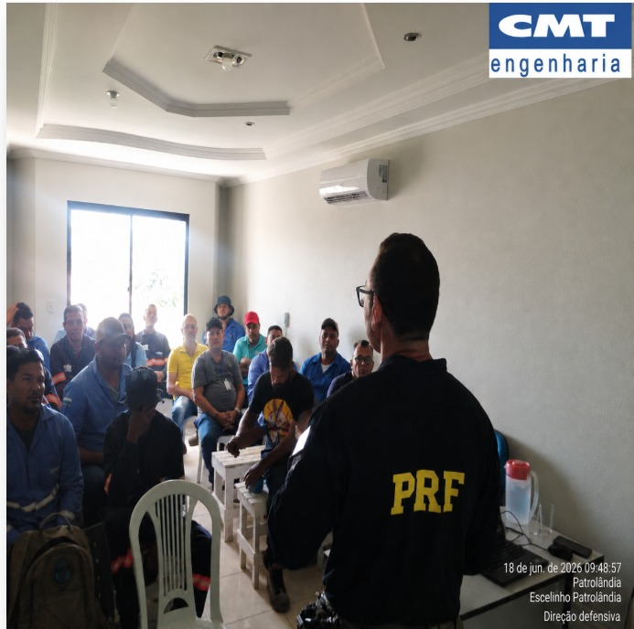
palestra da PRF (direção defensiva)
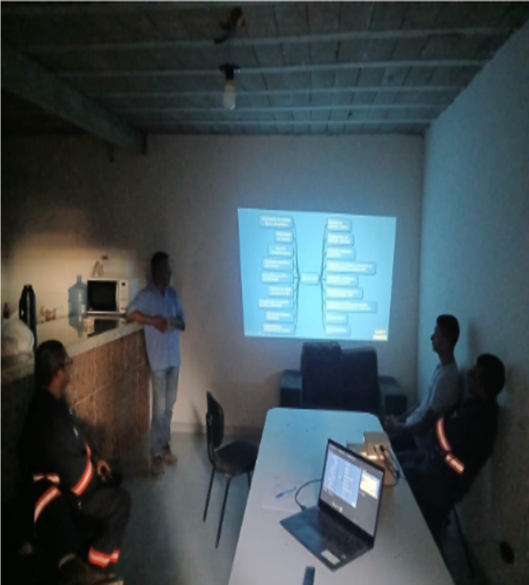
reciclagem da NR-10
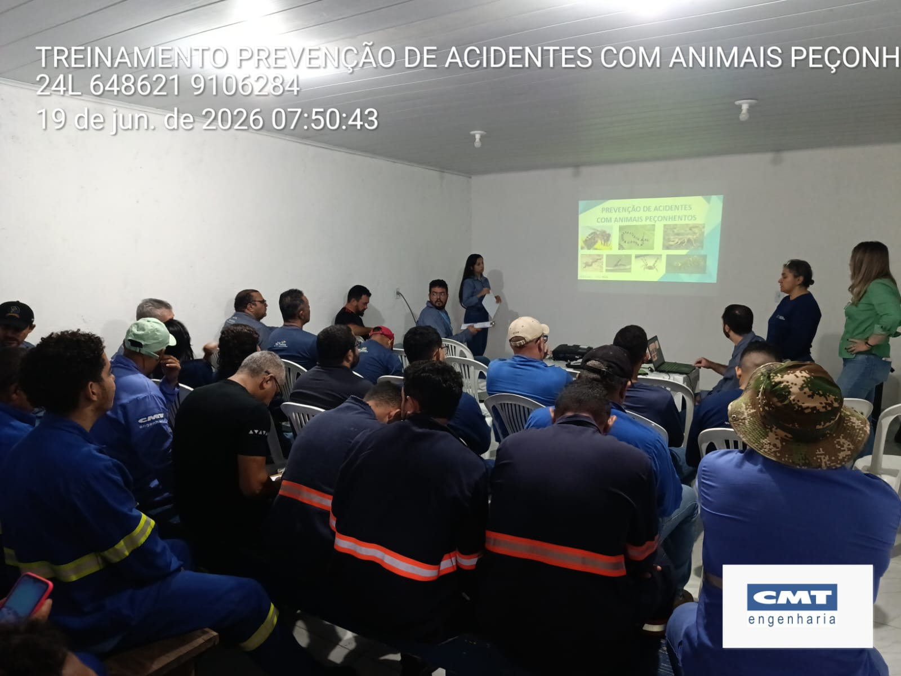
acidentes com animais peçonhentos
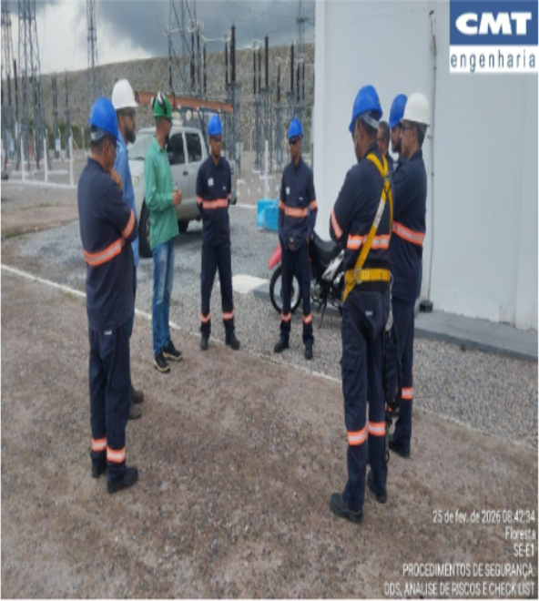
orientações sobre procedimentos de segurança
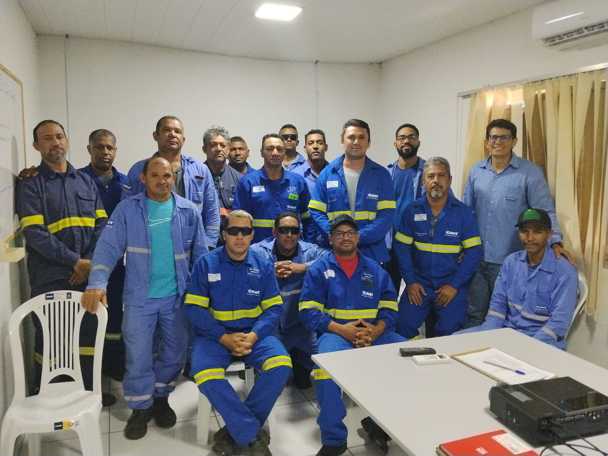
reciclagem da NR-5 (CIPA)
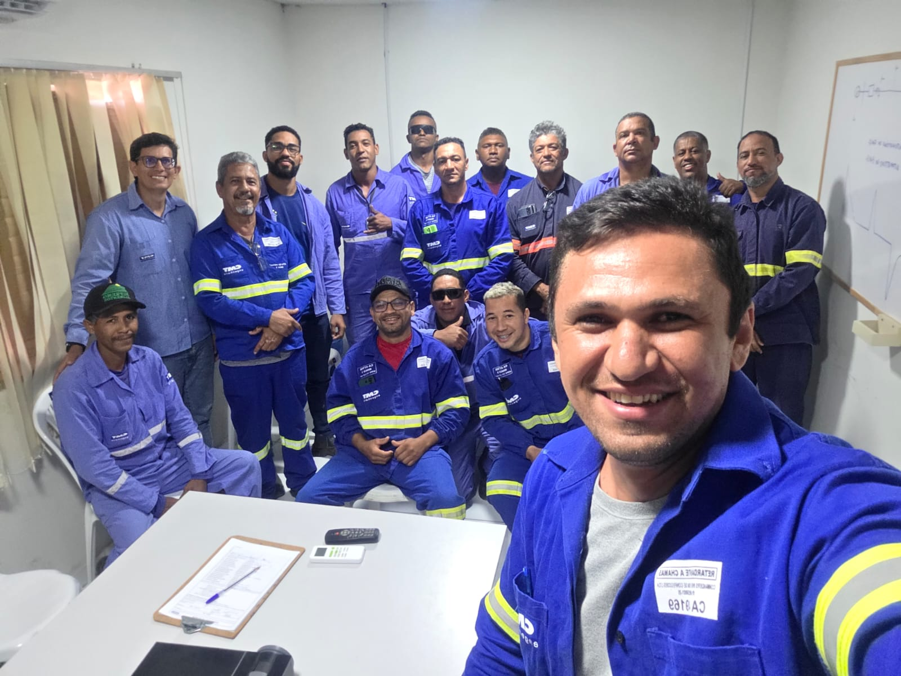
reciclagem da NR-5 (CIPA)
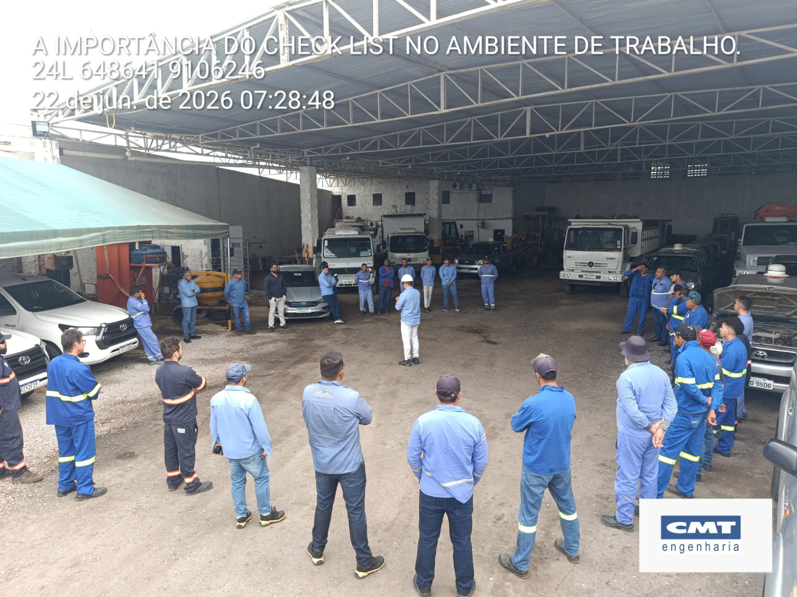
DDS, APR e checklist
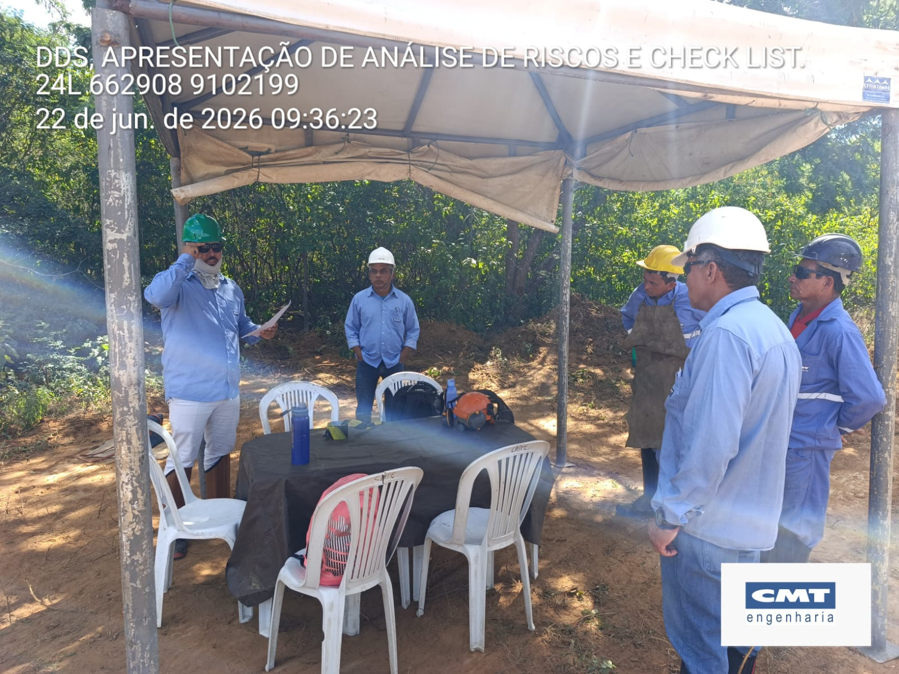
DDS, APR e checklist
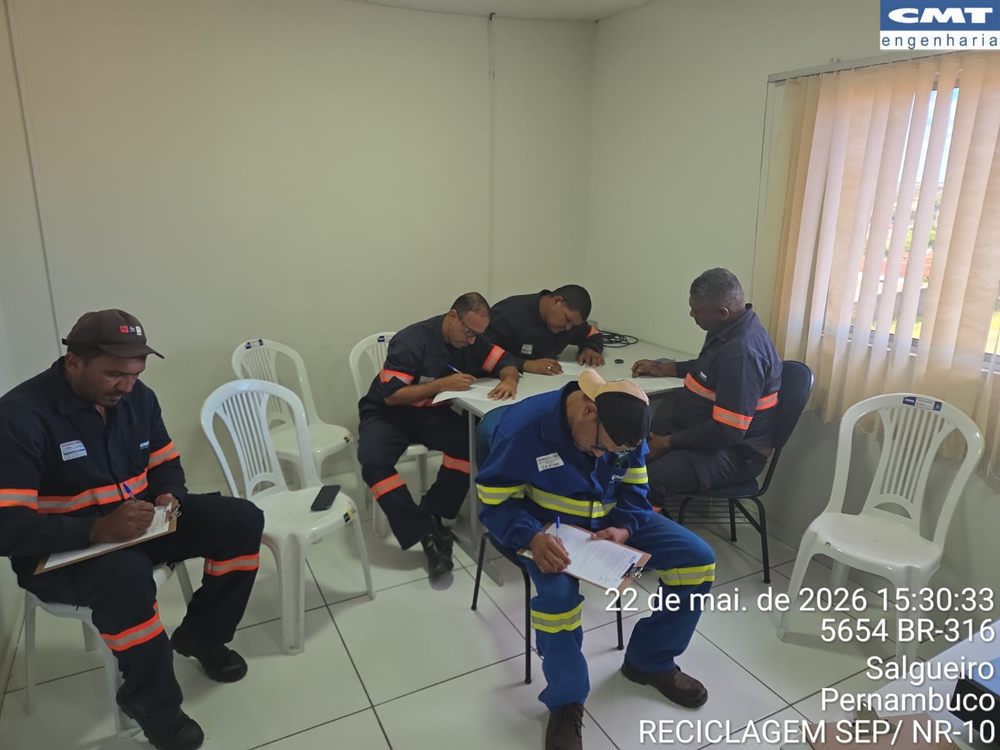
reciclagem SEP/NR-10
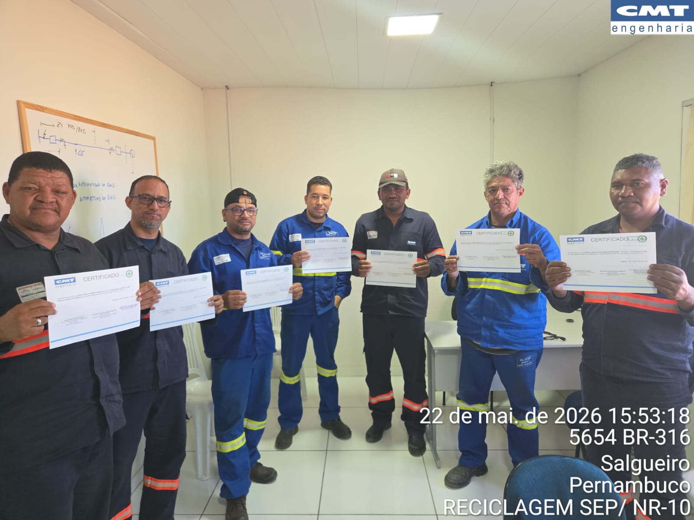
reciclagem SEP/NR-10
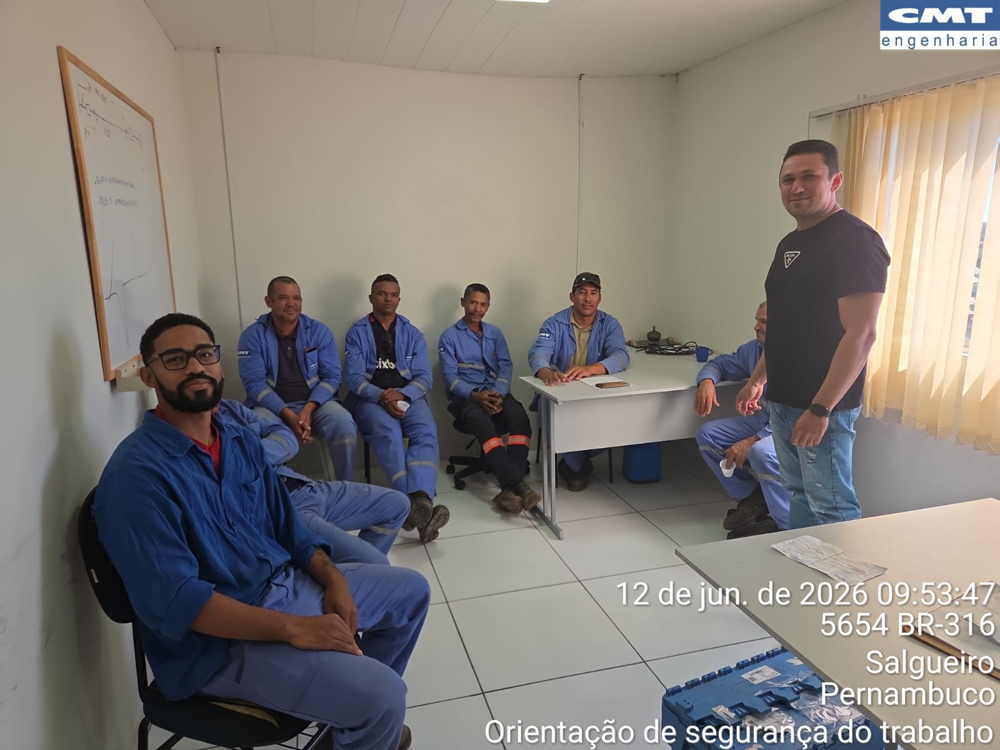
reciclagem da NR-1
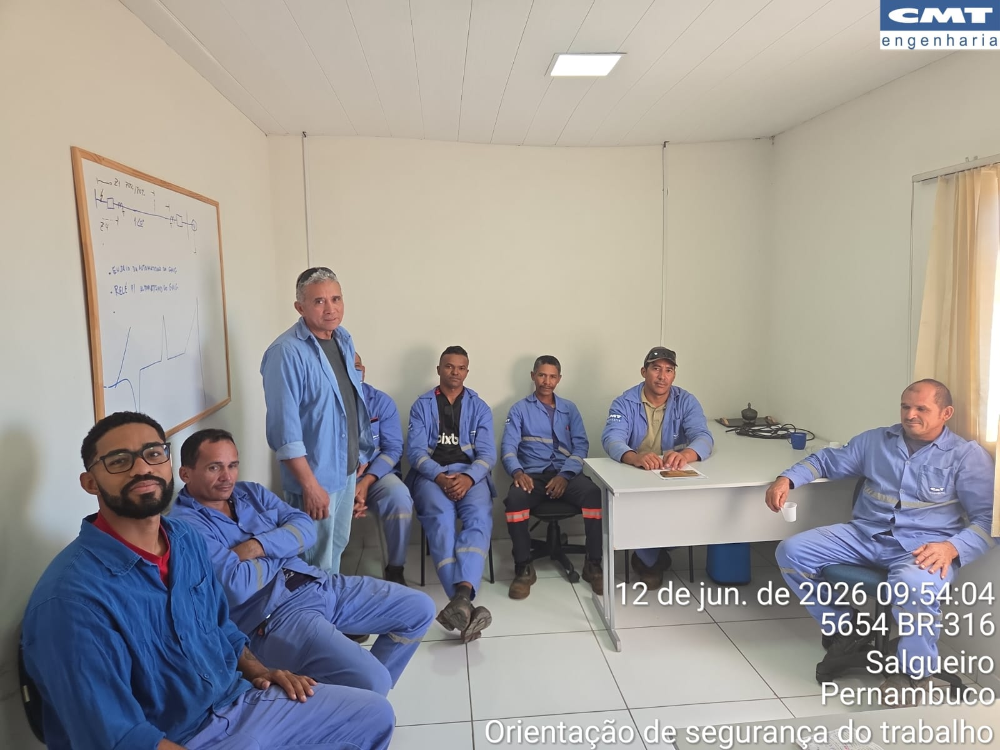
reciclagem da NR-1